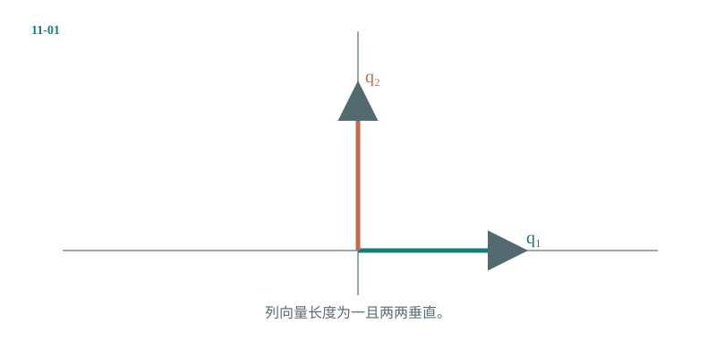
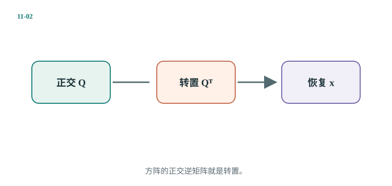
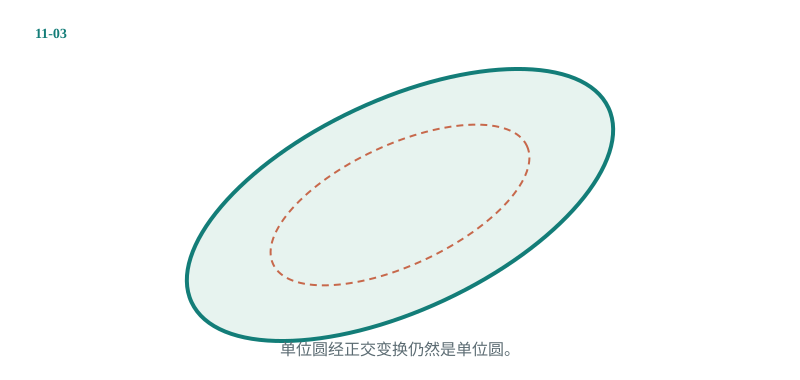
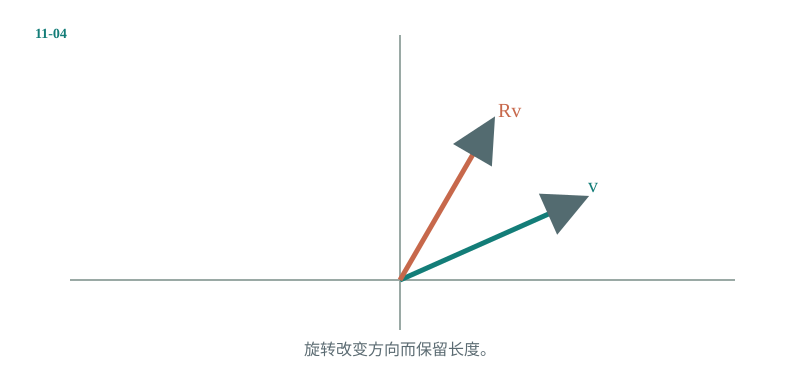
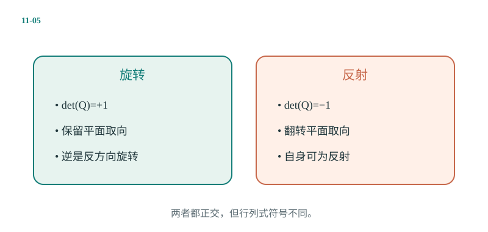
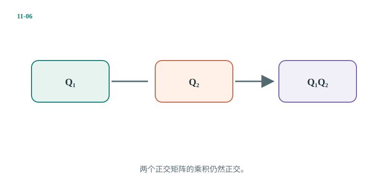
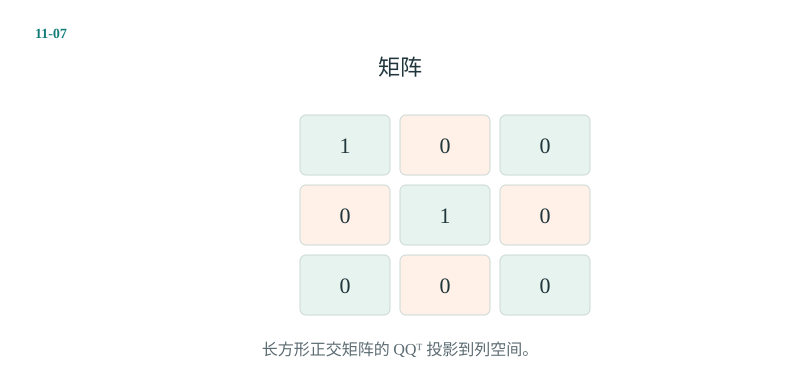
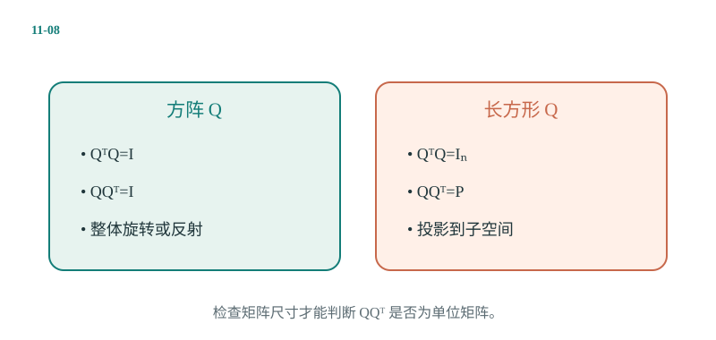

正交矩阵：旋转与反射为何不改变长度
矩阵可以改变坐标，却不一定改变几何。正交矩阵最重要的性质，是它保留内积、长度与距离。
01从一组垂直的单位向量开始
一组向量若两两垂直且长度都是 1，就叫正交规范组。把它们作为矩阵的列，得到 Q。列之间的点积组成 QᵀQ，因此“列正交且单位长度”可以压缩成一个矩阵等式。
若 Q 是方阵，列向量构成整个空间的一组正交规范基；若 Q 是长方形矩阵（m>n），它只描述一个 n 维子空间中的正交坐标。

02为什么转置就能代替求逆
对方阵 Q，QᵀQ=I 表明 Qᵀ 是 Q 的左逆。方阵左逆也是逆，所以 Q⁻¹=Qᵀ。求逆不再需要消元；把行和列转置就够了。
但对 m×n 的长方形矩阵（m>n），QᵀQ=Iₙ 仍成立，QQᵀ 却通常不是 Iₘ。

03内积、长度和角度都被保留
对任意 x,y，(Qx)ᵀ(Qy)=xᵀQᵀQy=xᵀy。内积不变，因此长度平方 xᵀx 不变，夹角也不变。正交矩阵不会把圆变成椭圆。
对两个点 x,y，距离 ‖Qx−Qy‖₂=‖x−y‖₂。它保留整个欧氏几何结构：长度、角度、距离都不变。

04二维旋转矩阵是最熟悉的正交矩阵
二维旋转角 θ 的矩阵由两列组成：第一列是 (cosθ,sinθ)，第二列是 (−sinθ,cosθ)。两列长度为 1，点积为 0，所以 QᵀQ=I。
旋转的逆是反方向旋转，也就是 R(θ)ᵀ=R(−θ)。角度可以改变，但每个点到原点的距离不变。

05反射也是正交变换，但会翻转方向
关于 x 轴的反射矩阵 diag(1,−1) 保留长度和角度，却把平面取向翻转。正交矩阵的行列式只能是 +1 或 −1：+1 对应保向的旋转型变换，−1 对应含反射的变换。
因此“正交”不等于“只旋转”。在三维中，正交矩阵也可以包含反射；若要表示纯旋转，还需要 det(Q)=+1。

06多个正交变换复合，仍然正交
若 Q₁、Q₂ 都正交，那么 (Q₁Q₂)ᵀ(Q₁Q₂)=Q₂ᵀQ₁ᵀQ₁Q₂=Q₂ᵀQ₂=I。正交变换在复合下封闭，逆矩阵也仍然正交。
这解释了为什么数值算法可以用一串旋转或反射来改变矩阵形状，同时避免放大向量长度。

07长方形 Q：正交投影而不是整个空间的旋转
考虑 Q 的两列是 R³ 中的两个正交单位向量。QᵀQ=I₂，但 QQᵀ 是 3×3 的投影矩阵，把向量投影到这两列张成的平面。它满足 (QQᵀ)²=QQᵀ 且对称。
因此必须看清矩阵尺寸。方阵 Q 的 QQᵀ=I；长方形 Q 的 QQᵀ 通常只是子空间投影。

08交互：旋转与反射怎样改变同一个向量
拖动角度滑块，观察固定向量 (3,4) 的端点绕原点运动；勾选反射后，向量再关于 x 轴翻转。输出的长度始终是 5，而行列式符号从 +1 变成 −1。
长度保持来自 QᵀQ=I；取向由 det(Q) 的符号决定。

正交变换实验
向量 v=(3,4)，先旋转，再可选地关于 x 轴反射。
‖Qv‖=5.00；det(Q)=+1
自测与思考
undefined
延伸阅读与来源
- MIT 18.06 · Orthogonal Matrices and Gram–Schmidt。正交矩阵与正交基。
- MIT 18.06 · ZoomNotes。QᵀQ=I 与矩阵分解。